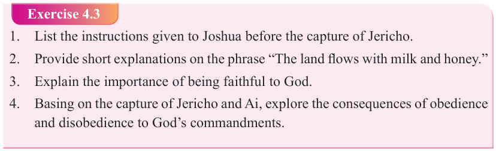

Form Two
Tanzania Institute of Education (TIE)
Bible Knowledge
59

In summary, the book of Joshua provides strong insights relating to God’s faithfulness in fulfilling His promises to Israel and instilling a spirit of covenant commitment.
It highlights the importance of obedience and warns against idolatry, disobedience featured in the story of Achan, and alliance with people of other cultures. From the capture of Jericho and Ai we learn that sin deprives one from God’s grace and favour; and that repentance brings one back to God’s favour.
Exercise 4.3
1. List the instructions given to Joshua before the capture of Jericho.
2. Provide short explanations on the phrase “The land flows with milk and honey.”
3. Explain the importance of being faithful to God.
4. Basing on the capture of Jericho and Ai, explore the consequences of obedience

and disobedience to God’s commandments.